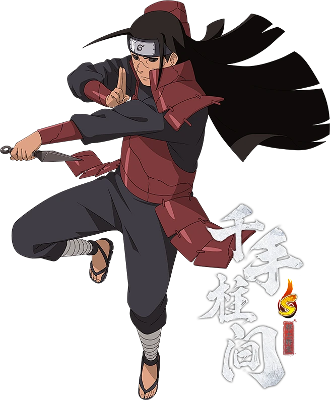

千手柱间，人称忍者之神，木叶隐村初代目火影，千手一族最强者，乱世终结者，忍界战力天花板级别的传奇忍者。
一、乱世成长（神级天赋）
生于战乱不断的战国时代，从小目睹无尽厮杀与死亡。
天生拥有顶级仙人体、海量查克拉、自愈能力极强。
性格宽厚温柔、重情义、热爱和平，厌恶无谓的战争。
与宇智波斑自幼相识，惺惺相惜，两人约定共同建立理想村落。
二、终结乱世（建立木叶）
与弟弟千手扉间联手征战四方，平定乱世各大豪强。
与宿敌宇智波斑长年激战，最终终结战国乱世。
成功建立木叶隐村，开创忍界村落制度，改变忍界格局。
为五大忍村的建立奠定基础，被公认为忍界开创者。
三、巅峰战力（忍者之神）
独创顶级血继限界木遁忍术，攻防治愈全能，压制所有忍术。
可开启仙人模式，战力暴涨，拥有单人平定战场的恐怖实力。
拥有庞大查克拉储备，能够徒手接尾兽玉、压制九尾。
曾多次击败宇智波斑、驯服九尾，战力稳居忍界第一。
四、守护和平（隐忍退让）
为了村子和平，主动将九尾送给其他忍村，平衡各国战力。
一生只为守护木叶，不争名利，一心只求世间安稳。
因太过善良心软，多次对宇智波斑手下留情，埋下后患。
晚年身体透支严重，巅峰战力不再，早早离世。
五、秽土转生（死柱登场）
第四次忍界大战被药师兜以秽土转生复活，重回战场。
保留全盛木遁、仙术、顶级战斗经验，依旧拥有压制级战力。
一人牵制多名强敌，压制宇智波斑、十尾，保护忍者联军。
冷静分析战局，指导后辈作战，展现顶级火影格局与实力。
六、终末释怀（落幕安息）
见证鸣人、佐助等新生代忍者的成长，彻底放下心中遗憾。
认可新时代的意志，明白忍界未来可以托付给后辈。
解除秽土转生束缚后，安心离去，灵魂回归净土。
一生征战只为和平，是忍界最伟大、最令人敬佩的传奇。
七、人物信条
“忍者的强大，不是为了征服，而是为了守护。”